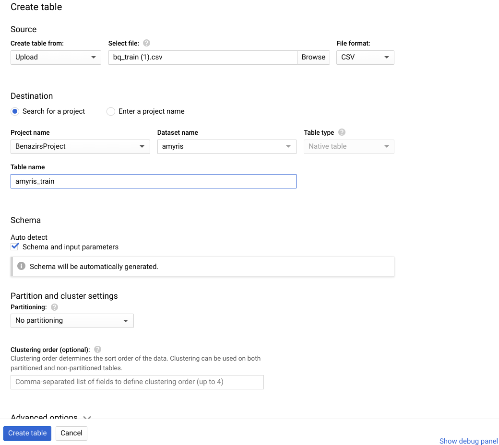
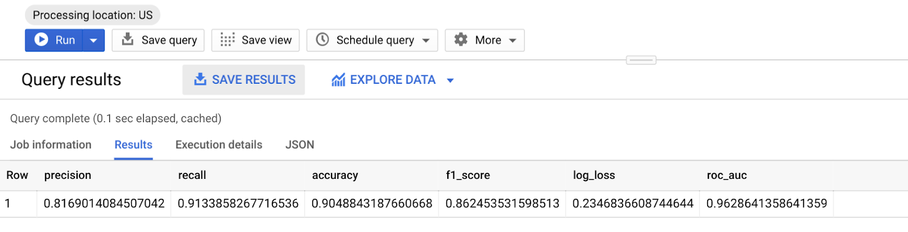
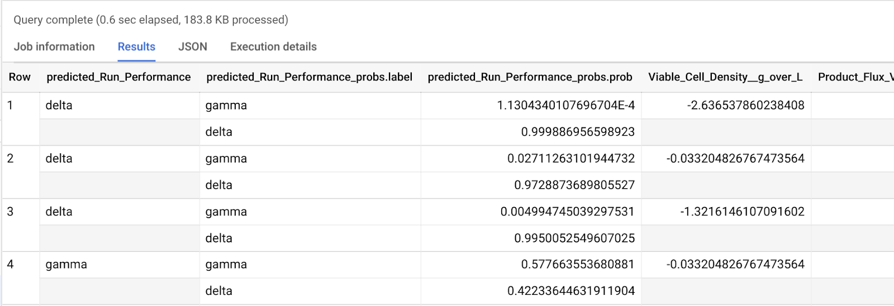

In this lab, you will build a ML model in BigQuery ML.
To complete this lab, you need:
This codelab is focused on Biguery ML. Non-relevant concepts and code blocks are glossed over and are provided for you to simply copy and paste.
If you don't have a GCP Project, follow these steps to create a new GCP Project.
BigQuery ML lets you create and execute machine learning models in BigQuery using standard SQL queries. BigQuery ML democratizes machine learning by letting SQL practitioners build models using existing SQL tools and skills. BigQuery ML increases development speed by eliminating the need to move data.
BigQuery ML functionality is available by using:
In this codelab, we will be using Google Cloud Console.
The first step is to create a BigQuery dataset to store your model. To create your dataset, follow these steps:
Using the AI Platform notebook, create training, validation and test files using AI Platform notebooks for this lab.
imputer = SimpleImputer(missing_values=np.nan, strategy='median')
scaler = StandardScaler()
pipe = Pipeline([('imputer',imputer),
('scaler', scaler)
])
_X_train = pd.DataFrame(pipe.fit_transform(X_train))
_X_test = pd.DataFrame(pipe.fit_transform(X_test))
_X_validate = pd.DataFrame(pipe.fit_transform(X_validate))
X_train_rem_cols = X_train.drop(['Cap_Feedstock_Solids_End__percent', 'Cap_Dead_Cell_Layer_End__percent'], axis=1)
X_test_rem_cols = X_test.drop(['Cap_Feedstock_Solids_End__percent', 'Cap_Dead_Cell_Layer_End__percent'], axis=1)
X_validate_rem_cols = X_validate.drop(['Cap_Feedstock_Solids_End__percent', 'Cap_Dead_Cell_Layer_End__percent'], axis=1)
_X_train.columns = X_train_rem_cols.columns
_X_train.index = X_train_rem_cols.index
_X_test.columns = X_test_rem_cols.columns
_X_test.index = X_test_rem_cols.index
_X_validate.columns = X_validate_rem_cols.columns
_X_validate.index = X_validate_rem_cols.index
traindf = _X_train.join(y_train)
testdf = _X_test.join(y_test)
validatedf = _X_validate.join(y_validate)
## write data to csv files
traindf.to_csv('bq_train.csv', index=False)
testdf.to_csv('bq_test.csv', index=False)
validatedf.to_csv('bq_validate.csv', index=False)
Download these 3 files on your laptop. Next we will upload them to Bigquery.
Next, upload preprocessed data into BQ. Make sure to select options to upload, select file from your computer, file format as CSV and auto detect the schema and input parameters. Add a suitable table name.
Click on the DataSet and then click on Create Table.

You can create and train a logistic regression model using the CREATE MODEL statement with the option 'LOGISTIC_REG'. The following query uses a CREATE MODEL statement to train a new binary logistic regression model on the training data.
The CREATE MODEL statement trains a model using the training data in the SELECT statement.
The OPTIONS clause specifies the model type and training options. Here, the LOGISTIC_REG option specifies a logistic regression model type. It is not necessary to specify a binary logistic regression model versus a multiclass logistic regression model: BigQuery ML can determine which to train based on the number of unique values in the label column.
The input_label_cols option specifies which column in the SELECT statement to use as the label column. Here, the label column is Run_Performance, so the model will learn which of the two values of Run_Performance is most likely based on the other values present in each row.
The 'auto_class_weights=TRUE' option balances the class labels in the training data. By default, the training data is unweighted. If the labels in the training data are imbalanced, the model may learn to predict the most popular class of labels more heavily. Class weights balance the class labels by calculating the weights for each class in inverse proportion to the frequency of that class.
The SELECT statement queries the view from Step 2. This view contains only the columns containing feature data for training the model. The WHERE clause filters the rows in input_view so that only those rows belonging to the training dataframe are included in the training data.
To run the query that creates your logistic regression model, complete the following steps:
CREATE OR REPLACE MODEL
`amyris.amyris_model_lr`
OPTIONS
( model_type='LOGISTIC_REG',
auto_class_weights=TRUE,
data_split_method='NO_SPLIT',
input_label_cols=['Run_Performance'],
max_iterations=15) AS
SELECT
*
FROM
`amyris.amyris_train`
After creating your model, evaluate the performance of the model using the ML.EVALUATE function. The ML.EVALUATE function evaluates the predicted values against the actual data.
The query to evaluate the model is as follows:
SELECT
*
FROM
ML.EVALUATE (MODEL `amyris.amyris_model_lr`,
(
SELECT
*
FROM
`amyris.amyris_validate`
)
)The ML.EVALUATE function takes the model trained in Step 1 and evaluation data returned by a SELECT subquery. The function returns a single row of statistics about the model. This query uses data from input_view as evaluation data. The WHERE clause filters the input data so that the subquery contains only rows in the evaluation dataframe.
When the query is complete, click the Results tab below the query text area. The results should look like the following:
Because you performed a logistic regression, the results include the following columns:
To identify the income bracket to which a particular respondent belongs, use the ML.PREDICT function. The following query predicts the income bracket of every respondent in the prediction dataframe.
SELECT
*
FROM
ML.PREDICT (MODEL `amyris.amyris_model_lr`,
(
SELECT
*
FROM
`amyris.amyris_test`
)
)The ML.PREDICT function predicts results using your model and the data from input_view, filtered to include only rows in the 'prediction' dataframe. The top-most SELECT statement retrieves the output of the ML.PREDICT function.
When the query is complete, click the Results tab below the query text area. The results should look like the following:

To avoid incurring charges to your Google Cloud Platform account for the resources used in this tutorial:
You've done a lot in this lab 👏👏👏
To recap, you've learned how to: